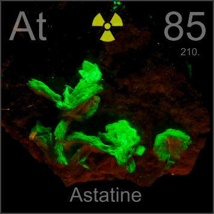

HOME
PREVIOUS
NEXT

Astatine
Atomic Weight: 210[note]
Density: N/A
Melting Point: 302 °C
Boiling Point: N/A
Astatine occurs in vanishingly small quantities in the natural decay chains of uranium and thorium minerals. You can't see any of it in this rock, but a few atoms are (probably) there from time to time.